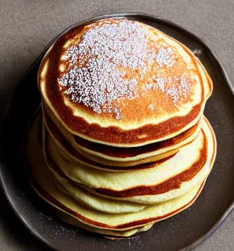

Fluffy Eggless Pancakes
Ingredients
- 1 cup all-purpose flour
- 1 tsp. sugar
- 1 tsp. cinnamon
- 2 tsp. baking powder
- 1 cup whole milk
- 1 tbsp. vegetable oil
- 1 tbsp. water
- 1 tsp. vanilla extract
- 2 tbsp. butter
Steps
- Combine dry ingredients and mix slightly.
- Add milk, oil, water, and vanilla.
- Whisk together until just combined. Be careful not to over mix - it should still be slightly lumpy.
- Set aside to rest for a few minutes.
- Heat a large skillet over medium-high heat until hot.
- While pan is heating, add butter.
- As soon as the butter is melted, add melted butter to pancake batter.
- Return pan to stove and stir butter into batter.
- When pan is hot, with a measuring cup or ladle, pour 1/4 cup of batter into the skillet for each pancake.
- Cook until bubbles form on the surface.
- Carefully flip pancakes with turner/spatula and cook until golden brown.